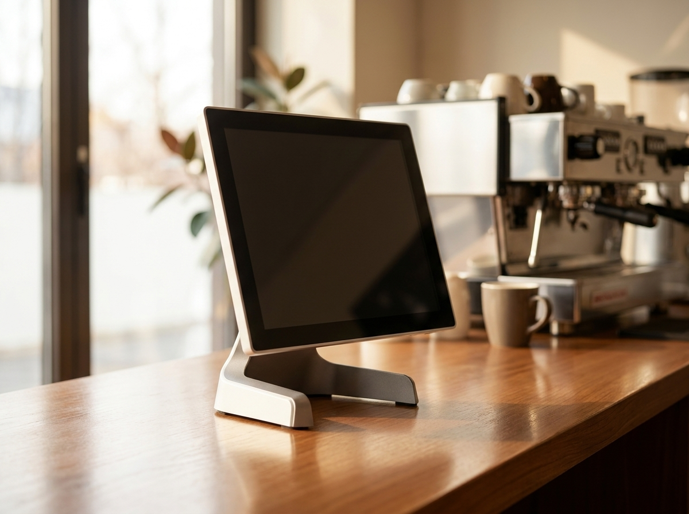

포스기 바꾸면 뭐가 달라지나요? 매장의 하루로 답해드립니다 (누리포스 N250)
"포스기 바꾸면 실제로 뭐가 좋아지나요?" — 상담 전화에서 가장 많이 받는 질문입니다. 14년간 수도권 3만 매장에 포스와 결제 단말기를 직접 설치해 온 누리네트웍스가, 오늘은 말 대신 영상 한 편으로 답해보려 합니다. 카페의 아침, 비스트로의 저녁, 베이커리의 낮 — 매장의 하루가 어떻게 달라지는지 27초에 담았습니다.
사장님의 하루는 계산대에서 시작해 계산대에서 끝납니다
아침에 문을 열면 가장 먼저 포스를 켜고, 마감할 때 가장 마지막에 정산을 봅니다. 하루 종일 손님과 만나는 접점도 결국 계산대입니다. 그래서 포스가 느리거나, 화면이 복잡하거나, 카드 승인이 한 번씩 튕기면 그 스트레스는 고스란히 사장님과 손님 모두에게 갑니다.
문제는 대부분의 매장이 "원래 이런 거려니" 하고 참고 쓴다는 점입니다. 저희가 3만 매장을 설치하며 확인한 사실은 단순합니다. 포스는 매장의 속도를 결정합니다. 주문이 밀리는 점심 피크에 포스가 1~2초씩 버벅이면, 한 시간에 처리할 수 있는 손님 수 자체가 줄어듭니다.
누리포스 N250 — 올인원으로 계산대가 깔끔해집니다
N250은 화면·프린터·카드리더가 하나로 통합된 올인원 포스입니다. 계산대 위에 본체 하나만 올라가므로 선 정리가 필요 없고, 좁은 카운터에서도 자리를 거의 차지하지 않습니다.
무엇이 달라지는지, 항목별로 정리했습니다
| 구분 | 기존 분리형 포스 | 누리포스 N250 |
|---|---|---|
| 계산대 공간 | 본체+모니터+프린터+리더기 각각 배치 | 올인원 1대로 정리 |
| 주문 처리 | 화면 전환 많고 손이 여러 번 감 | 터치 동선 단순화 |
| 결제 수단 | 단말기별 별도 설치 | 카드·간편결제 통합 (IC 칩 결제) |
| 고장 대응 | 업체별로 따로 연락 | 누리네트웍스 단일 창구 |
| 설치 | 택배 후 자가설치인 경우 많음 | 수도권 직영 기사 방문 설치 |
표에서 보시듯 핵심은 "빨라진다"보다 "단순해진다"에 가깝습니다. 계산대가 단순해지면 신입 직원 교육 시간이 줄고, 피크 시간 실수가 줄고, 마감 정산이 짧아집니다. 그 시간들이 모여 매장의 하루가 달라집니다.

영상 속 세 매장이 보여주는 것
이번에 공개한 브랜드 필름 「매장의 하루가 달라집니다」에는 세 개의 매장이 나옵니다.
첫 장면은 아침의 카페입니다. 오픈 준비로 분주한 시간, 바리스타가 컵을 정리하는 카운터 위에 N250이 조용히 자리를 지키고 있습니다. 두 번째는 저녁의 비스트로입니다. 하루 매출이 정점을 찍는 시간, 사장님이 여유 있게 손님을 맞을 수 있는 건 계산대가 알아서 돌아가고 있기 때문입니다. 마지막은 한낮의 베이커리입니다. 갓 나온 빵을 나르는 동선 한가운데에서도 포스는 걸리적거리지 않습니다.
세 장면 모두 공통점이 있습니다. 포스가 주인공이 아니라는 것. 좋은 포스는 존재감을 드러내지 않고, 사장님이 장사에만 집중하게 해줍니다. 저희가 N250을 권하는 이유도 그것입니다.
포스 교체를 결정하기 전, 이 3가지만 확인하세요
첫째, 지금 계약의 남은 기간과 위약금 조건입니다. 기존 계약이 남아 있다면 교체 시점에 따라 부담이 달라집니다. 계약서가 없거나 조건이 기억나지 않으셔도 괜찮습니다. 상담 시 함께 확인해 드리고, 지금 바꾸는 게 이득인지 기다리는 게 이득인지부터 계산해 드립니다.
둘째, 매장에서 실제로 쓰는 기능의 목록입니다. 배달앱 연동, 테이블별 주문 관리, 포인트 적립, 매출 리포트 — 업종마다 꼭 필요한 기능이 다릅니다. 기능이 많은 포스가 아니라, 우리 매장이 쓰는 기능이 빠짐없이 되는 포스가 좋은 포스입니다.
셋째, 고장 났을 때 누가 오는지입니다. 포스는 하루라도 멈추면 장사가 멈춥니다. 설치한 업체가 전화만 받는 곳인지, 기사가 직접 방문하는 곳인지가 실사용에서 가장 큰 차이를 만듭니다. 누리네트웍스는 수도권 직영 기사가 설치부터 사후관리까지 같은 창구로 책임집니다.
이 세 가지를 확인한 뒤에 교체를 결정하셔도 늦지 않습니다. 반대로, 이 세 가지 중 하나라도 지금 답답한 게 있다면 — 그게 바로 교체를 검토할 신호입니다.
가격이 궁금하시다면
블로그에는 금액을 적지 않습니다. 매장 업종·규모·기존 계약 상태에 따라 최적 구성이 달라지기 때문입니다. 대신 상담 시 거품 없는 직접 공급가 기준으로, 매장에 맞는 구성과 함께 정확히 안내드립니다. 정품 신제품, 수도권 직영 설치, 그리고 설치 후가 더 중요한 사후관리까지 — 14년간 해온 방식 그대로입니다.
자주 묻는 질문
Q1. 기존에 쓰던 포스에서 데이터(메뉴·매출)를 옮길 수 있나요?
대부분 가능합니다. 설치 기사가 방문 시 메뉴 세팅을 함께 진행하며, 기존 프로그램에 따라 이전 범위가 달라질 수 있으니 상담 시 사용 중인 포스명을 알려주시면 정확히 확인해 드립니다.
Q2. 설치까지 얼마나 걸리나요?
수도권 기준, 상담 후 일정 협의를 거쳐 직영 기사가 방문합니다. 설치·메뉴 세팅·사용 교육까지 한 번의 방문으로 마무리하는 것을 원칙으로 합니다.
Q3. 카드 단말기나 키오스크와 같이 구성할 수 있나요?
가능합니다. 테이블오더·키오스크·카드 단말기와의 연동 구성이 오히려 일반적입니다. 매장 운영 방식에 맞춰 필요한 것만 조합해 드립니다.
Q4. 영상은 어디서 볼 수 있나요?
누리네트웍스 유튜브와 인스타그램에서 보실 수 있습니다. 아래 주소를 눌러주세요.
상담·문의
포스 교체를 고민 중이시라면, 지금 쓰시는 포스의 불편한 점 하나만 말씀해 주세요. 그 불편이 바뀔 수 있는 것인지부터 정직하게 안내드리겠습니다.
- 📞 전화상담 1544-7754
- 🌐 홈페이지 nwpos.co.kr
- 📷 인스타그램 instagram.com/nurinetworkspos
- ▶️ 유튜브 youtube.com/@nurinetworks